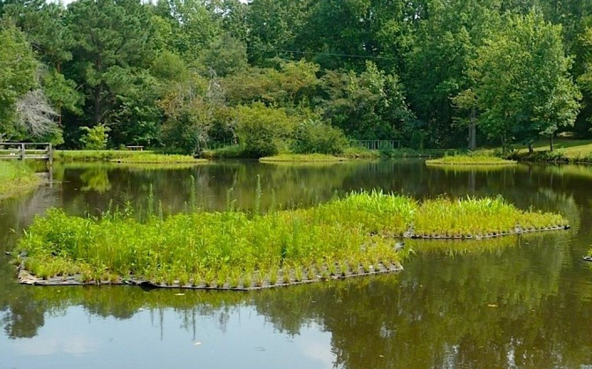
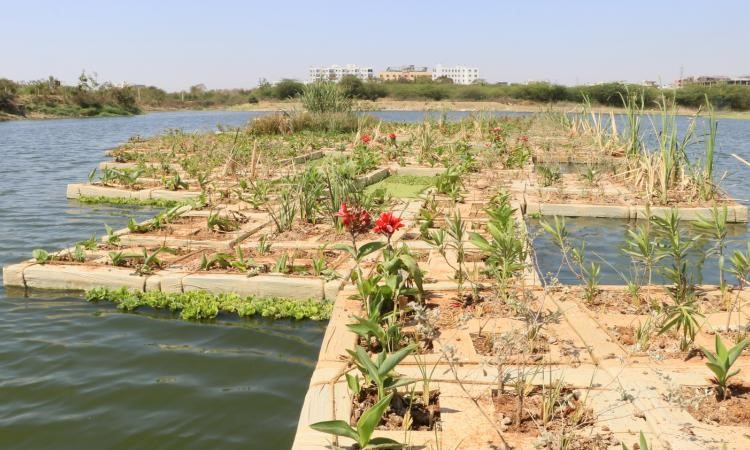

A sustainable and environment-friendly approach is quickly taking hold as an efficient and long-lasting remedy for the rising pollution in urban water bodies. The man-made islands called Floating Treatment Wetlands (FTW) are the ones that float on water bodies. They are man-made islands covered with plants that floats to purify the water body, creating a cleaner and better water body for organisms that depend on it.
Selected filter plants are attached to a wooden structure that floats. Presence of hydroponic mat supports the water flow beneath and through the plants, and the roots serve as a natural filter.
These plant structures are also a great place for microorganisms that are beneficial to the aquatic ecosystem, which also contribute to water treatment.
While the primary goal of FTW is to purify water by removing extra minerals and contaminants, there are other benefits too. Furthermore, the reservoir is shaded by the filter islands, which is quite helpful if the water heats up too much due to increase in temperature. This, in turn, directly and indirectly threatens aquatic organisms. They also aid in the oxygenation of the water body as they release and transport oxygen.
Plants’ roots in the island start to grow extensively and densely like forests. It makes a great home for young animals and serves as an insect sanctuary by attracting them. The rhizome zone of the root of the plants of wetland may expand to the point where support in the form of a frame and buoyancy components would be no longer required over time. Additionally, the vegetation on the island can prove to be beneficial to a variety of native species, thereby enhancing the local biodiversity. Reports suggest that a few birds are already residing in some of the floating treatment islands.
The FTW is a bamboo rafts with thermocol or plastic water bottles on the sides to add to buoyancy. These materials are chemically inert when it is in contact for a long duration of time. A layer of gunny bags that stretch can be attached to the bottom of the raft to create a tray that holds 2 cm layer of gravel. Saplings have to be planted such that its roots reach into water. Saplings can be planted with a distance of 3-4 feet. The saplings that can be planted include:
These plants absorb high levels of Phosphorous and Nitrogen in the sewage water that is present in the water body. In addition, the FTW is significantly less expensive than a conventional sewage treatment facility.
Several studies have concluded that, for an FTW to be effective, it must take up at least 0.37% of the area of the water body. For a lake having area of 1 acre, FTW of 15m2 must suffice.
There are reports that the FTWs are already successfully implemented in Hauz Khas Lake in Delhi and Neknampur lake in Hyderabad. In addition to the clean water bodies by the use of FTWs, it can contribute to the biodiversity, beautification and also the locals. It is a no secret that water pollution is one of the greatest threats to the biodiversity. Hence FTW can be considered as a simple, natural and effective solution.
Water quality is improved by floating treatment wetlands in a number of ways. They begin by consuming nutrients from the water’s upper layers, which mainly come from surface runoff. Such runoffs remove a lot of anthropogenic pollutants from reservoirs and from agriculture. Studies have suggested that the effects of this type of pollution are less where the islands are deployed. The filter islands draw heavy metals from the water that have accumulated in plant tissues.
by
originally published on www.lakesofindia.com